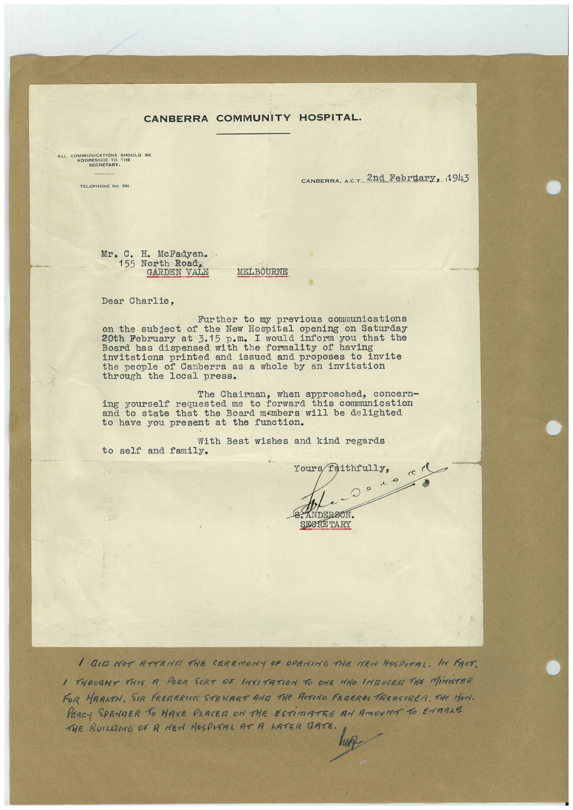

Book 1 · scan 051


Description
Transcription
Context
Review notes
Compare the machine draft with the scan. Handwriting and names need human review.
Artifacts
Edit the artifacts field in this note’s frontmatter to change these records. This summary is generated.
B01-S051-A01 — Letter — Book 1, scan 051
Types: Typed document, Letter
Scope: Whole scanned page; individual items can be split out during review.
Caption: Not mapped yet.
Caption source: Not recorded yet.
Caption status: unmapped
Machine transcription
CANBERRA COMMUNITY HOSPITAL• ALL COMMUNICATIONS SHOULD BE ADDRESSED SECRETARY. TELEPHONE NO. 566. CANBERRA, A.C.T. 2nd February, 1943 Mr. C. H. McFadyen. 155 North Road, GARDEN VALE MELBOURNE Dear Charlie, Further to my previous communications subject of the New Hospital opening on Saturday 20th February at 3.15 p.m. I would inform you that the Board has dispensed with the formality of having invitations printed and proposes to invite the people of Canberra as a whole by an invitation through the local press. The Chairman, when approached, concern- ing yourself requested me forward this communication state that the Board members will be delighted to have you present at the function. With Best wishes and kind regards to self and family. Yours faithfully, c - SEBRE TARY I DID NOT ATTENA THE CEREMONY PE OPENING THE MEN HOSPITAL. IM FACT. I THOUGHT THIS A POOR SORT OR INVITATION TO ONE MHO INDUCEA THE MiNISTER FOR HEARTH, SIR FREDERICS STEMART AMA THe RETINO FRAGRAs TREASURER. THe MAN. PERCY SPENDER TO HAVE PLACER ON THE ESTiMATEE AN AmOUNT TO ENTERE THE BUILDING OF A NEW HOSPITAL AT A LATER TATE.